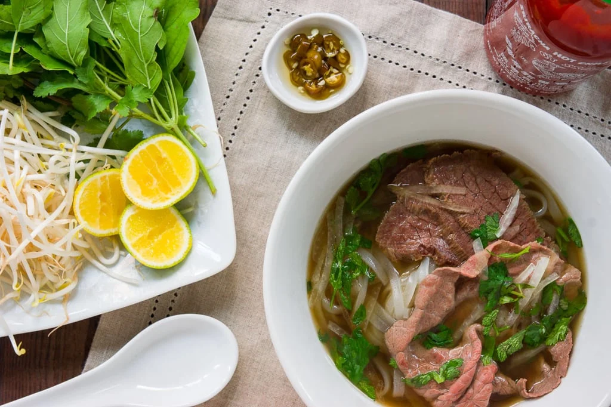

Vietnamese Pho

Pho is a traditional Vietnamese dish often served in households, restaurants, and street-stalls
in Vietnam, now expanding its reach into the Western world. Replicating the crystal clear broth
and complex, delectable flavoring present in every variation of pho is difficult to accomplish, but not impossible.
Provided below is a recipe for crafting your own unique pho in the comfort of your home!
Ingredients for Broth
- 5-6 pounds of beef knuckles or leg bones
- 6 quarts cold water
- 2 medium onions, quartered
- 4-inch piece of fresh ginger, halved lengthwise
- 2 cinnamon sticks
- 1 tablespoon coriander seeds
- 1 star anise
- 6 whole cloves
- 1 black cardamom pod
Black cardamom is a member of the ginger family and is quite powerful.
You can buy it in Asian markets, but it can be hard to find. If you are
unable to find it, it is okay to omit this ingredient.
- 1 1/2 tablespoon of salt
- 1/4 cup fish sauce
- 1-inch piece yellow rock sugar
This is also known as "lump sugar" and is sold at Asian markets. Look
for it sold in a box. You will most likely need to break the rock
sugar into chunks. You can use a hammer or rolling pin to do this.
Ingredients for Assembly
-
1 pound small 1/8-inch wide dried or fresh "banh pho"
noodles
- 1/4 cup thinly sliced onions
- 1/4 cup chopped cilantro leaves
Ingredients for the Table
- Sprigs of fresh mint and/or Asian/Thai basil
- Bean sprouts
- Thinly sliced red chiles (such as Thai bird)
- Lime wedges
- Fish sauce
- Hoisin sauce
Steps
Broth
- Add beef bones to a large pot that will hold at least 10 quarts. Then, cover
bones with cold water. Place pot onto high heat and bring to a boil.
Boil for 3 to 5 minutes. During this time, impurities and foam (or scum)
will be released and rise to the top. Drain bones, discarding the water. Then, rinse bones with
warm water and scrub stockpot to remove any residue that has stuck to the sides. Add the bones back
to the stockpot and cover with 6 quarts of cold water.
-
Meanwhile, move an oven rack to a high position then turn broiler to high. Line a baking sheet with
aluminum foil. Place quartered onions and halved ginger onto baking sheet then broil for 10 to 15 minutes,
turning onions and ginger occasionally so that they become charred or browned on all sides.
-
Add cinnamon sticks, coriander seeds, fennel seeds, star anise, cloves and the black cardamom
pod to a dry frying pan. Place onto low heat and cook, stirring occasionally until fragrant. About
5 minutes. Place toasted spices into a cotton muslin bag/herb sachet or cheesecloth then tie with
butchers twine to seal.
-
Bring stockpot with parboiled bones and water to a boil then lower to a gentle simmer.
Add charred onion and ginger as well as the bag or sachet of toasted spices. Add 1 1/2
tablespoons of salt, a 1/4 cup of fish sauce and the rock sugar. Continue to simmer broth,
uncovered, for 3 hours. If at any time foam or scum rises to the surface, use a spoon to remove it.
-
Use tongs or a wide mesh spoon to remove bones, onion and ginger from broth then strain broth
through a fine mesh strainer. The broth will have a layer of fat at the the top. There are two
ways to remove this. First, if you plan to enjoy the broth now, skim the fat from the top of the
broth using a spoon. If you do not mind waiting, you can also pour broth into containers then refrigerate
overnight. As the broth cools, the fat will solidify, making it very easy to remove.
Assembly
- Bring the broth to a gentle simmer over medium heat.
-
If you are using dried noodles, add noodles to a bowl then cover with hot water and soak for 15 to
20 minutes until soft and opaque. If you are using fresh, add to a colander then rinse with cold water.
-
To cook the noodles, bring a medium saucepan filled with water to a boil. Place noodles into boiling water
and cook for about 10 seconds or until they collapse. Drain noodles then divide between bowls. (We like to
fill each bowl by 1/3 with noodles).
-
Arrange slices of raw meat into bowls, and then top with the hot broth. Finish broth with onion slices
and cilantro. Serve bowls with a plate of optional garnishes listed above.
Back Next